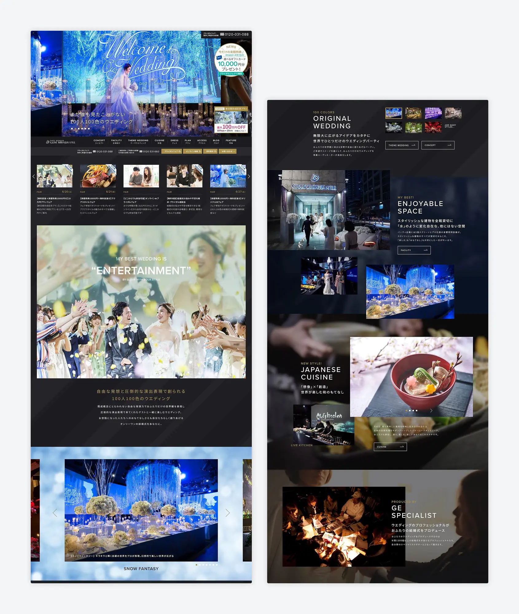

結婚式場のWebサイト制作
- Webサイト
- 実務案件

結婚式場のWebサイト制作に、Webデザイナー兼コーダーとして携わりました。
- カテゴリー：Webデザイン、HP制作
- 制作種別：実務案件
- 担当領域：ヒアリング、設計、デザイン、実装
- 使用ツール・言語等：Figma, PHP, HTML&CSS,Sass等
- 制作期間：3ヶ月
プロジェクト概要
本プロジェクトは、ブランドイメージの刷新とWebサイトからの集客力向上を目的とした、結婚式場公式Webサイトのフルリニューアル案件です。ディレクター1名、エンジニア1名、デザイナー兼コーダー1名（自身）の計3名体制で進行しました。
当時の旧サイトはデザインが古く、施設が持つ高級感や独自のブランドイメージを十分に表現できていませんでした。さらに情報設計の甘さから、問い合わせや来館予約への導線が最適化されていないことも大きな課題となっていました。こうしたビジネス上の課題を改善し、ブランドイメージの再構築とWebからの集客力向上を達成するためにプロジェクトが始動しました。
当プロジェクトにおける私の担当は、クライアントへのヒアリング、ワイヤーフレームの作成、デザインカンプの作成、そしてHTML、CSS、PHP、JavaScriptを用いたフロントエンド実装です。ディレクターやエンジニアと密に連携しながら、デザインから実装までを一貫して形にしていきました。
アプローチ
掲載する大枠の情報自体は維持しつつ、それらをどう見せるかという体験の質に注力しました。まず同業他社の動向や最新のデザイントレンドを分析し、式場の魅力を最大限に表現できるビジュアルを追求しました。具体的には、高品質な写真の選定、トーン＆マナーに沿った配色やタイポグラフィ、余白を活かしたレイアウトにより、非日常的な高級感を演出しています。
同時に情報設計も見直し、訪問者が最も知りたい式場の特徴をページ冒頭に配置した上で、プラン、ドレス、料理、会場といった具体的な検討情報へと自然にアクセスできるストーリーを組み立てました。これにより、ブランドの世界観を伝えながら、スムーズに問い合わせや来館予約へ導く動線を実現しています。
最終成果物


成果・実績
納品後、クライアントからは、当社のブランド価値やイメージの刷新に繋がり、施設の世界観を美しく反映した仕上がりになったと高い評価をいただきました。 また、ブランドイメージの体現と合わせて情報導線を最適化したことで、サイト公開後はWebサイト経由の問い合わせ数がリニューアル前と比較して約60%増加し、集客面においても具体的なビジネス効果を確認することができました。
デザインのプロセス
本プロジェクトにおける制作プロセスの詳細です。クライアントの課題解決とビジネスゴールの達成に向けて、以下の手順で制作を進めました。
- ヒアリング
- 企画・要件定義
- 設計・ビジュアルデザイン
- 実装
ヒアリング
プロジェクトの初期段階として、サイトリニューアルの背景にある目的や課題、クライアントの求めるデザインの方向性、およびメインターゲット層の整理を行いました。
現状の課題としては、デザインの古さによって式場本来のラグジュアリーかつ温かみのある世界観が伝わっておらず、Webサイトからの集客へ十分に繋がっていない点が浮き彫りとなりました。 そこで本プロジェクトでは、式場のブランドイメージの確固たる体現と、Web経由での集客向上（来館予約の増加）をゴールとして設定しました。
デザインの要望においては、創業から大切にしている「アーティスティックで上質な空間」という独自の美意識を正しく解釈することを重視しました。 クライアントとの対話を通して、単なる「派手で装飾的な高級感」ではなく、洗練された余白や素材感で魅せる「静謐で品格のある上質さ」をWeb上で表現するという明確なトーン＆マナーの基準を導き出しました。
ターゲット層については、20代後半〜30代前半の「一生に一度の自分たちらしいこだわりの式を挙げたい」と考える新郎新婦を定義しました。 空間の美しさや料理の質を重視する、本物志向で目の肥えたユーザー層に響く訴求軸が必要であるという認識をチーム全体で擦り合わせました。
企画・要件定義
ヒアリングで確認した前提をもとに、具体的な企画および要件定義のフェーズへと進みました。今回はサイトリニューアルであったため、まずは既存サイトの掲載内容や情報構造の課題抽出から着手しました。
サイト分析の結果、ビジュアル面においてはデザイントレンドとの乖離によって式場が持つ本来のブランドイメージを損ねている点が大きな課題として確認されました。 一方、集客面においては予約に至る導線が不明瞭であり、ブライダルフェアや来館予約へのCVR（転換率）に最適化されていない構造であることが判明しました。 これらの分析を経て、本プロジェクトでは「ブランドイメージの刷新」と「情報設計の最適化によるCVR向上」の2軸を企画のコアとして定義しました。
続いてビジュアル表現の基準を定めるため、都内の競合他社のWebサイトやブライダル領域の最新トレンドを比較分析しました。装飾過多なデザインが多い競合との差別化を図りつつ、ターゲット層に響く洗練された世界観の構成要素を抽出しました。
最終的に、これらのリサーチ結果とヒアリング内容を統合して詳細なユーザーペルソナを設定しました。ペルソナの検討プロセスや情報探索時の心理に基づき、コンテンツの掲載優先順位や求めるデザインの方向性を具体的なプロダクト要件として定義しました。
設計・ビジュアルデザイン
定義した要件を具体化するため、まずはユーザーの検討プロセスに即したユーザーシナリオの策定から着手しました。 サイト訪問者がどのような心理変化を経てブライダルフェアや来館予約に至るかという感情曲線を可視化し、思考を途切れさせない情報配置と遷移導線を整理したワイヤーフレームを作成しました。 このシナリオをもとにワイヤーフレームを作成し、検討に必要な情報をストレスなく取得できる情報構造を確立しました。
情報骨子が確定した後のデザインカンプ作成段階では、式場独自の「静謐で品格のある上質さ」をWeb上で具現化するため、各ビジュアル要素の精緻化を徹底しました。 ビジュアル表現においては、会場の空間美やリアルな空気感が伝わる高品質でシネマティックな写真をメインに採用しました。 配色設計では、黒を基調としたダークトーンのカラーパレットを採用することで、空間の奥行きと洗練された高級感を演出しました。 さらに、随所にゴールドをアクセントカラーとして効かせることで、上質でラグジュアリーなブランド世界観を際立たせました。
タイポグラフィにおいては、和文にクセが少なくニュートラルな「Source Han Sans Japanese（源ノ角ゴシック）」を採用し、漢字の読みやすさと情報量の多いUIでも高い視認性を確保しました。 一方、欧文には幾何学的とヒューマニストの中間でスタイリッシュな佇まいを持つ「Proxima Nova」を組み合わせました。 日本語側で可読性を担保しつつ、英語側で洗練されたモダンなブランド感を演出するという、機能性と世界観の両立を図るフォント選定を行いました。
レイアウト面では規則的なグリッドに収めすぎず、写真やテキストをあえてずらして配置するアシンメトリーな構成を取り入れました。 雑誌の紙面をめくっているような上質なリズムを生み出し、スクロールを通じて式場の世界観に深く没入できるデザインを構築しました。
さらに集客の要となるCV導線においては、世界観を損なわない洗練されたトーンを保ちつつ、ブライダルフェア予約へスムーズに遷移できる固定導線や分かりやすいアクション設計を組み込み、ブランド表現とCVR向上の両立を実現しました。
振り返り
プロジェクトの中で特に難しさを感じたのは、クライアントが抱く漠然としたイメージを引き出し、実際のデザインへと落とし込んでいくプロセスでした。 言葉だけでは認識のズレが起きやすいため、デザインカンプを作成する段階では、複数の参考サイトを例として提示しながら細かくイメージを擦り合わせて進行しました。
工夫を重ねて進めたものの、自身の表現の引き出しがもっと豊富であったり、相手の抽象的なイメージを的確に言語化するスキルがさらに高ければ、より円滑に進行できたのではないかという反省もありました。 クライアントの潜在的な要望を的確に捉える難しさを実感すると同時に、ヒアリングの技術や提案の引き出しをさらに豊かにしていく必要性を再認識する機会となりました。